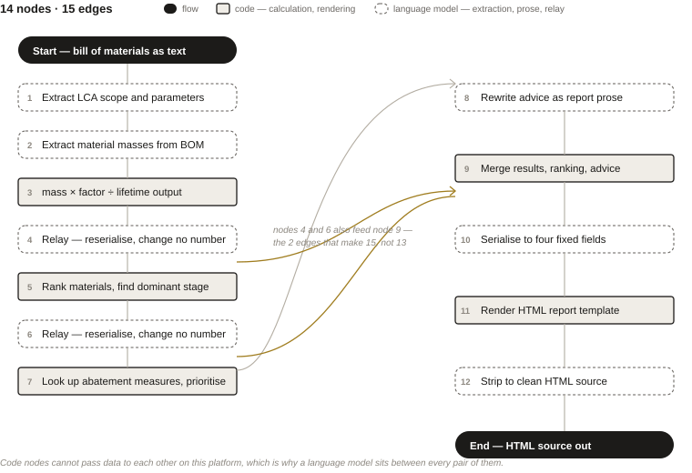
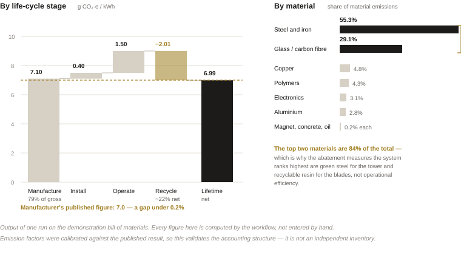

A language-model agent that writes carbon footprint reports
Working out the lifetime carbon emissions of a wind turbine normally takes a specialist weeks. I built a workflow that takes the turbine's parts list and returns a finished report.
Tools Low-code agent workflow platform, Python, HTML templating, deepseek-v4-flash as the language model
Timeframe 2026
Role Solo — I designed the workflow, wrote the calculation and rendering code, and validated the output against the manufacturer's published figure.

Life-cycle assessment (LCA) Adding up the environmental cost of a product across its whole life: making it, installing it, running it, and disposing of it. The relevant standards here are ISO 14040/44.
g CO₂-e/kWh Grams of carbon dioxide equivalent per kilowatt-hour of electricity the turbine generates over its life. It lets you compare a wind turbine with a gas plant on the same scale.
What was the problem?
Wind power is clean to run but not free to build. Most of a turbine's lifetime carbon is spent before it generates anything, in producing the steel for the tower and the composite for the blades. Manufacturers and wind farm owners increasingly have to quantify that — for environmental product declarations, for procurement, for ESG disclosure.
Doing it properly is slow. A standards-compliant LCA is a long manual process with a high expertise barrier, and it is barely reusable: change the turbine model or receive a new batch of supplier data and much of the work is repeated from scratch. That combination — repetitive, structured, rule-governed, but requiring judgement at the edges — is what made it worth trying to automate.
Bill of materials (BOM) The parts list: how many tonnes of steel, aluminium, copper, composite and so on go into one machine. For the demonstration case that is around 216,000 tonnes of steel and iron and 9,700 tonnes of glass and carbon fibre across a 66-turbine farm.
The decision I didn't take I did not build an independent inventory. Emission factors were back-calibrated against the manufacturer's published result, which makes this a re-computation and reporting harness — not a new LCA. Saying so is the difference between a validated tool and a circular one.
What did I build?
A 14-node workflow with a single linear job: bill of materials in, report out. The chain extracts material masses from free text, multiplies each by an emission factor and divides by lifetime generation, splits the total across manufacturing, installation, operation and end-of-life recycling credit, ranks materials by contribution, generates prioritised abatement measures from a lookup table, merges the three result streams, serialises them to a fixed JSON schema, and renders the whole thing into an HTML report with summary figures, tables and charts.
Two platform constraints shaped the architecture more than any design preference. Code nodes cannot pass data directly to other code nodes, so every pair of adjacent calculation steps needed a language-model node between them acting as a relay — which is why the graph alternates code and model rather than simply chaining functions. The prompts for those relay nodes say, emphatically, to restructure the payload as JSON and change no numbers, because a model that quietly rounds a figure in transit would be very hard to catch. The second constraint is that the platform cannot emit a file, so the final node outputs HTML source that the user saves and opens themselves.
The choice I'd defend hardest is the one I made about calibration, described in the margin. The emission factors are tuned to reproduce a known answer. That means the system demonstrates that the pipeline and the accounting structure work — it does not independently establish the turbine's footprint, and presenting it as if it did would be the easiest way to make this project worthless.
Cradle-to-grave The system boundary used here: everything from extracting raw materials to scrapping and recycling the machine at the end of its life.
What did I find?
The workflow returns 6.99 g CO₂-e/kWh for the demonstration turbine, against the manufacturer's published 7.0 — a gap under 0.2%, which is the check that the accounting structure and parameters hold together.
The interesting part is the breakdown. Manufacturing alone is 7.10 g CO₂-e/kWh, about 79% of gross emissions; installation contributes 0.40 and operation 1.50; recycling at end of life returns a credit of −2.01, cutting the lifetime net figure by roughly 22%. Within manufacturing, two materials do almost all the damage: steel and iron at 55.3% of material emissions and glass and carbon fibre at 29.1%, together over 84%.
That is a useful result rather than a tidy one, because it tells you where effort belongs. Improving operational practice moves a number that is 17% of the total; switching to hydrogen-reduced steel for the tower and foundation moves one that is more than half of it. The report's generated recommendations follow that logic — green steel and recyclable blade resin at high priority, low-carbon maintenance vessels at moderate.

Why admit limits The default failure mode here is a report that looks authoritative because it is well-formatted. The limits section is what stops a reader from over-trusting it.
What would I do differently?
The failure mode I would fix first is the fallback defaults. Each code node carries preset values calibrated to reproduce the reference result, so if the input parts list is missing or malformed the chain still produces a complete, confident-looking report — of the defaults, not of the input. That should fail loudly instead of silently, and the report should state which fields came from the user.
Beyond that: the single-model, single-turbine scope is a minimum viable demonstration rather than a tool, and the obvious next steps are sourcing emission factors independently so the validation stops being circular, refining the accounting from nine material classes to component level, and adding transport, more greenhouse gases, and uncertainty ranges. Reading the bill of materials straight out of a PLM or ERP system would remove the one manual step that still gates the whole thing.